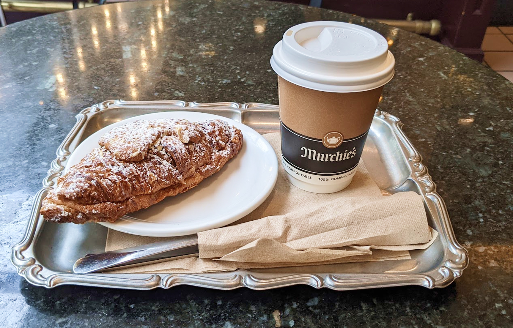
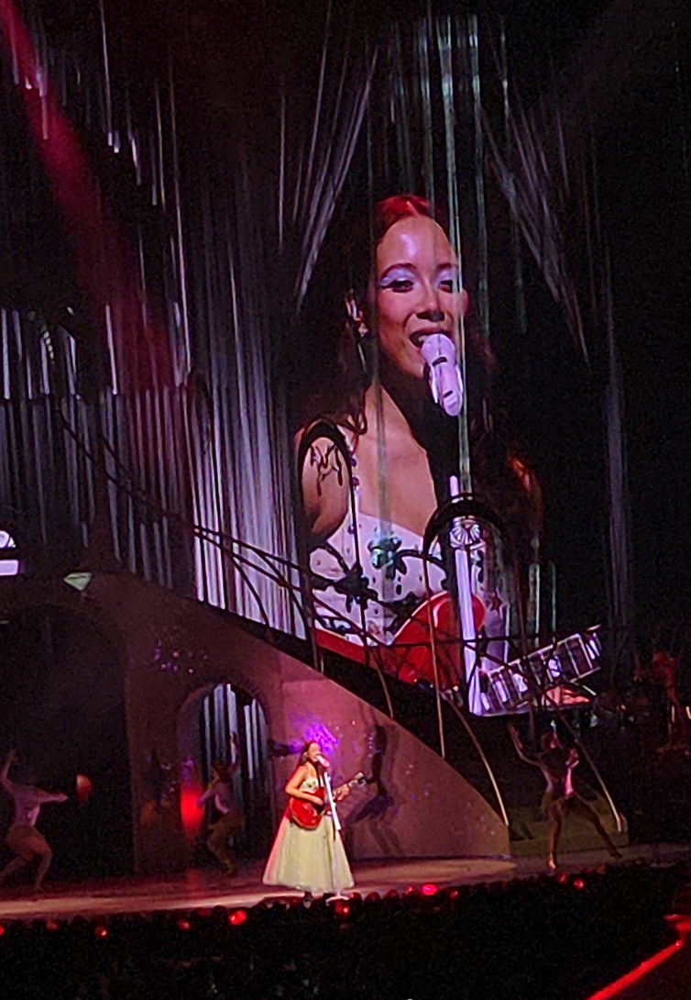
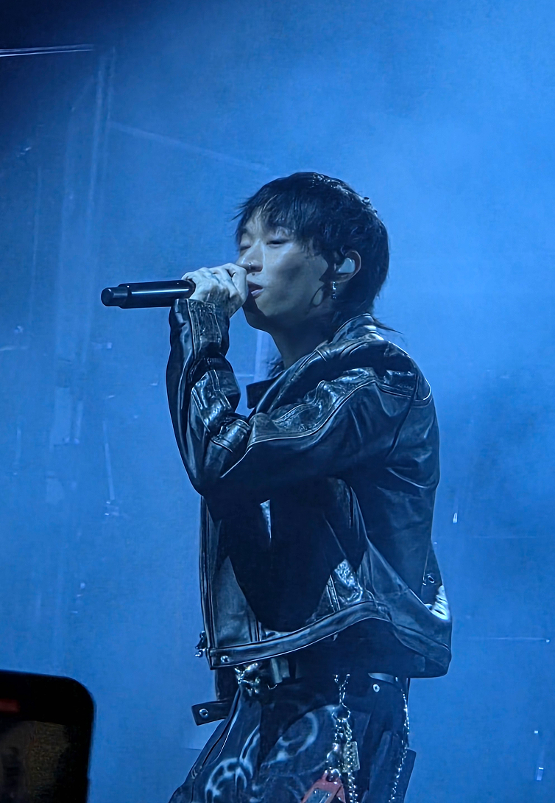

Hi, I'm Rebecca!
I’m a fourth year SFU student with a focus in graphic design and creative media. I work to make my designs brand-oriented, visually accessible, and eye-catching. I have over 2 years of professional graphic design experience, spanning print and digital advertising and collateral.
I recently completed a 7-month co-op as a Graphic Design Administrator at BCLIQUOR, where I created conceptual covers for 2 issues of the TASTE Magazine, and contributed to the monthly in-store collateral, among other tasks.
In my free time, I enjoy keeping up all things from the animation film world. I 2D animate for fun, watch (and re-watch) my favourite animated films and series, and add to my large collection of animation film art books that I greatly cherish!
I also love going to concerts, growing my vinyl record collection, and exploring Vancouver’s cutest cafes, shown in the photos below.



Contact
rhw2@sfu.ca


Experience
Graphic Design Administration Co-op
BC Liquor Distribution Branch | June - Dec 2025
Digital Media Communication Specialist Co-op
Fraser Health Authority | Apr 2024 - Jan 2025
Graphic Designer, Athletics & Recreation Marketing and Communications